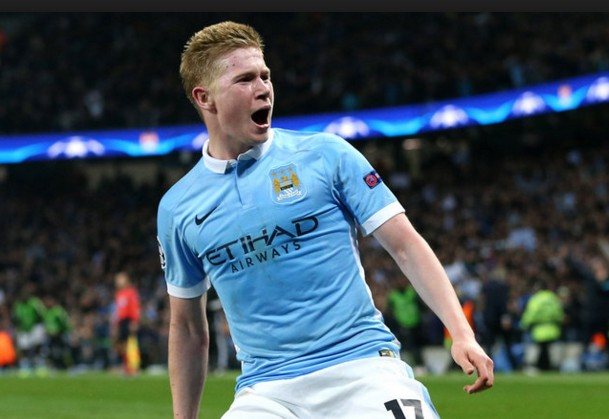

"
축구선수 28세 (만 26세) 게자리 양띠 출생1991년 6월 28일, 벨기에 소속팀 맨체스터 시티 FC (MF 미드필더) 신체181cm, 68kg 데뷔2008년 KRC 헹크
2015.08 ~ 맨체스터 시티 FC (잉글랜드) 2014 제20회 브라질 월드컵 벨기에 국가대표 2014.01 ~ 2015 VfL 볼프스부르크 (독일) 2012.08 ~ 2013 SV 베르더 브레멘 (독일) 임대 2012.02 ~ 2012 KRC 헹크 (벨기에) 임대 2012.01 ~ 2014 첼시 FC (잉글랜드) 2008.07 ~ 2012 KRC 헹크 (벨기에)